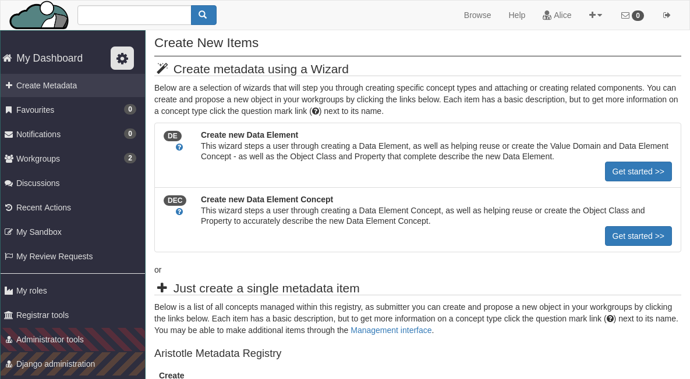
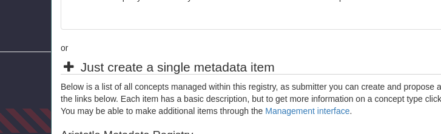
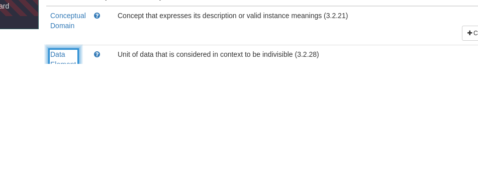
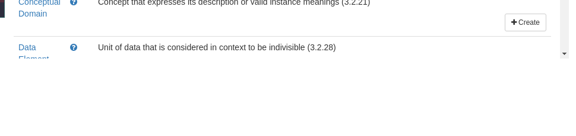
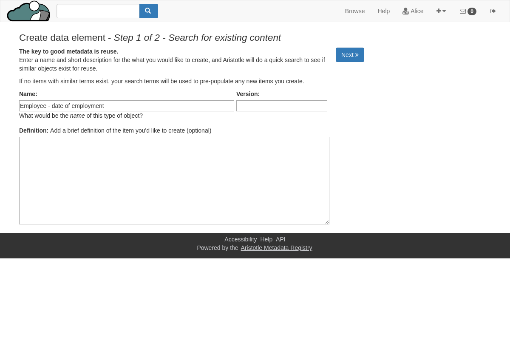

Creating a Data Element¶
Go to “create metadata” under the Dashboard
Scroll to the section titled “Just create a single metadata item”
Under this section, scroll down to find the section titled “Data Element”
This will be under the section titled Aristotle Metadata Registry.
Other metadata types will be available and grouped by their add-on.
Click either the name of the object you wish to create, or click the “Create” button on the right of the page
After clicking you will be taken to the first page of the metadata creation process
Fill search fields and submit
Use the first page to begin the creation process by entering the name of the metadata you are creating. At this step only the name is required, but on this page you can also add an optional description and version. The registry will use this information to find similar items.
Fill in metadata description
After submitting, if similar content was found, this will be shown at the top of the page

To continue saving, you will need to select the box marking that you have reviewed these items.
If no new content was found, no warning will appear.

Add extra context
Additional fields for recording references and extra content can be added to fields under the “Names & References” tab of the editor.

Add extra components
Some metadata types have special fields for recording context specific information and links to other metadata in the registry.

From this section, you can can add a Value Domain and a Data Element Concept from the drop down search boxes.

Click “Save” to complete
When done, scroll down and click the “Save” button. Once saved you will be redirected to the page of the new item.